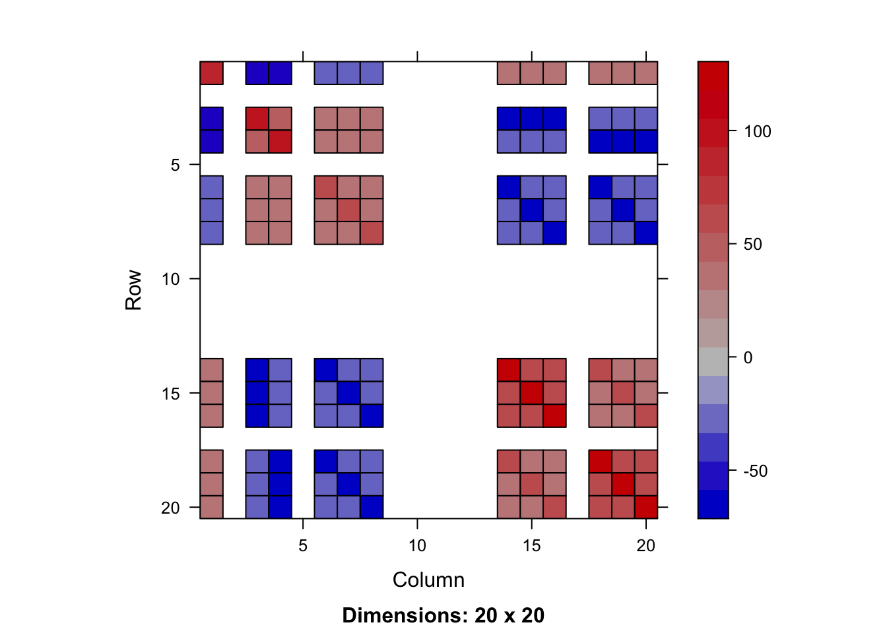
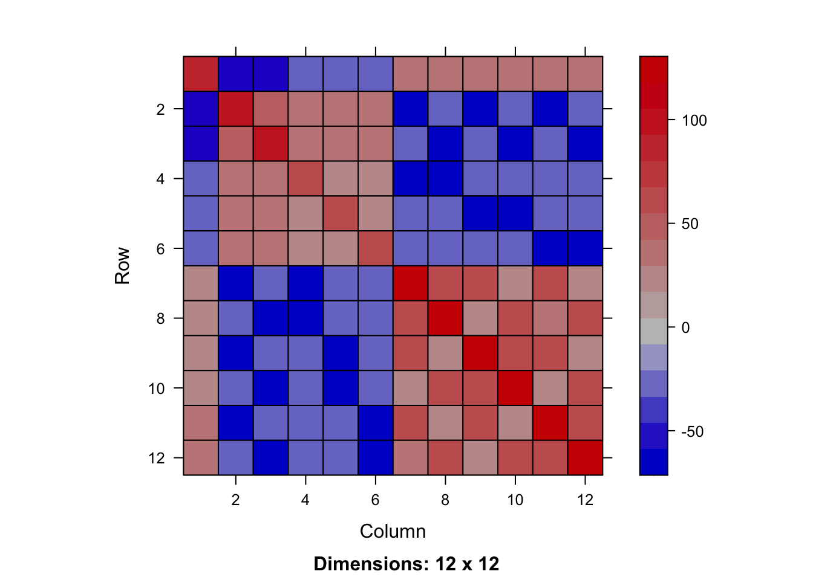
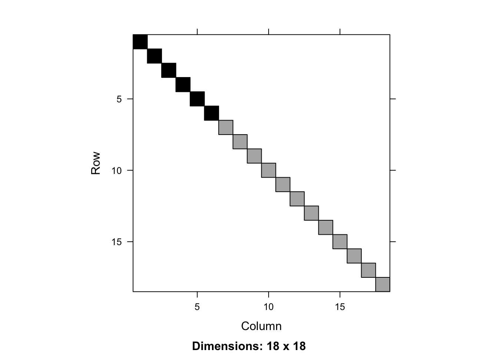
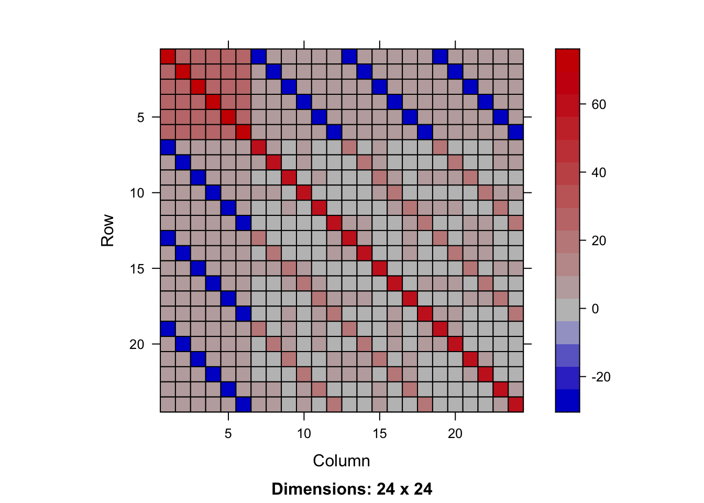
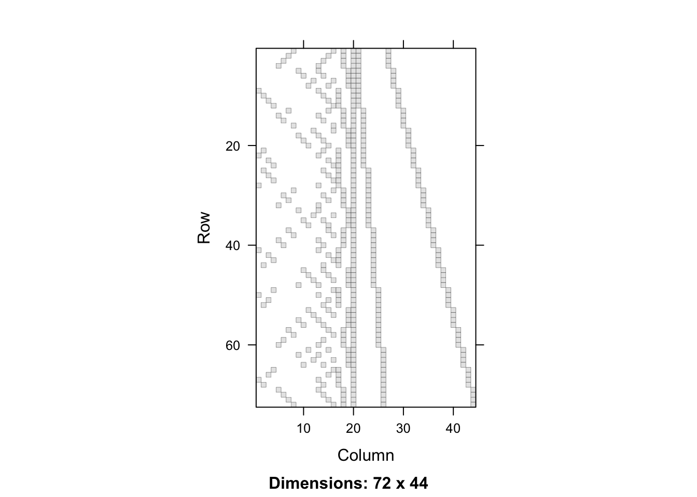

library(tidyverse)
library(asreml)
library(broom.asreml)
asreml.options(design = TRUE,
Cfixed = TRUE,
Csparse =~ Blocks/Wplots)
fit <- asreml(yield ~ Variety * Nitrogen,
random = ~ Blocks/Wplots, data = oats)
X <- model.matrix(~ Variety*Nitrogen, data = oats)
Z <- cbind(model.matrix(~ Blocks - 1, data = oats), model.matrix(~ Blocks:Wplots - 1, data = oats))
n <- nrow(X)Linear Mixed Models
Model setup
\[\boldsymbol{y} = \mathbf{X}\boldsymbol{\beta} + \mathbf{Z}\boldsymbol{u} + \boldsymbol{\epsilon}\]
where
- \(\boldsymbol{y}\) is the vector of observations
- \(\mathbf{X}\) is the design matrix for fixed effects
- \(\boldsymbol{\beta}\) is the vector of fixed effects
- \(\mathbf{Z}\) is the design matrix for random effects
- \(\boldsymbol{u}\) is the vector of random effects
- \(\boldsymbol{\epsilon}\) is the vector of residuals,
assuming
\[\begin{bmatrix} \boldsymbol{u} \\ \boldsymbol{\epsilon} \end{bmatrix} \sim N\left(\begin{bmatrix} \boldsymbol{0} \\ \boldsymbol{0} \end{bmatrix}, \begin{bmatrix} \mathbf{G}(\boldsymbol{\sigma}_g) & \boldsymbol{0} \\ \boldsymbol{0} & \mathbf{R}(\boldsymbol{\sigma}_r) \end{bmatrix}\right)\]
where \(\mathbf{G}\) is the covariance matrix of random effects and \(\mathbf{R}\) is the covariance matrix of residuals.
Alternative model setup
\[\boldsymbol{y} = \mathbf{W}\boldsymbol{b} + \boldsymbol{\epsilon}\]
where \(\mathbf{W} = \begin{bmatrix} \mathbf{X} & \mathbf{Z} \end{bmatrix}\) and \(\boldsymbol{b} = \begin{bmatrix} \boldsymbol{\beta} \\ \boldsymbol{u} \end{bmatrix}\).
Mixed model equation
Also called Henderson’s mixed model equation, the mixed model equation is given by
\[\underbrace{\begin{bmatrix} \mathbf{X}^\top \mathbf{R}^{-1} \mathbf{X} & \mathbf{X}^\top \mathbf{R}^{-1} \mathbf{Z} \\ \mathbf{Z}^\top \mathbf{R}^{-1} \mathbf{X} & \mathbf{Z}^\top \mathbf{R}^{-1} \mathbf{Z} + \mathbf{G}^{-1} \end{bmatrix}}_{\mathbf{C}} \begin{bmatrix} \boldsymbol{\beta} \\ \boldsymbol{u} \end{bmatrix} = \begin{bmatrix} \mathbf{X}^\top \mathbf{R}^{-1} \boldsymbol{y} \\ \mathbf{Z}^\top \mathbf{R}^{-1} \boldsymbol{y} \end{bmatrix}\]
- Best Linear Unbiased Estimator (BLUE): \(\hat{\boldsymbol{\beta}} = (\mathbf{X}^\top \mathbf{V}^{-1} \mathbf{X})^{-1} \mathbf{X}^\top \mathbf{V}^{-1} \boldsymbol{y}\)
- Best Linear Unbiased Predictor (BLUP): \(\tilde{\boldsymbol{u}} = \mathbf{G} \mathbf{Z}^\top \mathbf{V}^{-1} (\boldsymbol{y} - \mathbf{X}\hat{\boldsymbol{\beta}})\)
- \(\tilde{\boldsymbol{\epsilon}} = \mathbf{R}\mathbf{P}\boldsymbol{y}\)
Useful matrices
\(\mathbf{V} = \text{Var}(\boldsymbol{y}) = \mathbf{Z}\mathbf{G}\mathbf{Z}^\top + \mathbf{R}\)
\(\mathbf{P} = \mathbf{V}^{-1} - \mathbf{V}^{-1} \mathbf{X} (\mathbf{X}^\top \mathbf{V}^{-1} \mathbf{X})^{-1} \mathbf{X}^\top \mathbf{V}^{-1}\)
\(\mathbf{C} = \begin{bmatrix} \mathbf{X}^\top \mathbf{R}^{-1} \mathbf{X} & \mathbf{X}^\top \mathbf{R}^{-1} \mathbf{Z} \\ \mathbf{Z}^\top \mathbf{R}^{-1} \mathbf{X} & \mathbf{Z}^\top \mathbf{R}^{-1} \mathbf{Z} + \mathbf{G}^{-1} \end{bmatrix}\)
Prediction error variance
\(\mathbf{C}^{XX} = \text{Var}(\hat{\boldsymbol{\beta}} - \boldsymbol{\beta}) =\text{Var}(\hat{\boldsymbol{\beta}}) = (\mathbf{X}^\top \mathbf{V}^{-1} \mathbf{X})^{-1}\)
\(\mathbf{C}^{ZZ} = \text{Var}(\tilde{\boldsymbol{u}} - \boldsymbol{u}) = \mathbf{G} - \mathbf{G} \mathbf{Z}^\top \mathbf{P} \mathbf{Z} \mathbf{G}\)
\(\mathbf{C}^{XZ} = \text{Cov}(\hat{\boldsymbol{\beta}} - \boldsymbol{\beta}, \tilde{\boldsymbol{u}} - \boldsymbol{u}) = -(\mathbf{X}^\top \mathbf{V}^{-1} \mathbf{X})^{-1} \mathbf{X}^\top \mathbf{V}^{-1} \mathbf{Z} \mathbf{G}\)
\(\mathbf{C}^{ZX} = \text{Cov}(\tilde{\boldsymbol{u}} - \boldsymbol{u}, \hat{\boldsymbol{\beta}} - \boldsymbol{\beta}) = -\mathbf{G} \mathbf{Z}^\top \mathbf{V}^{-1} \mathbf{X} (\mathbf{X}^\top \mathbf{V}^{-1} \mathbf{X})^{-1}\)
\[\text{Var}\left(\begin{bmatrix} \hat{\boldsymbol{\beta}} - \boldsymbol{\beta} \\ \tilde{\boldsymbol{u}} - \boldsymbol{u} \end{bmatrix} \right) = \mathbf{C}^{-1} = \begin{bmatrix}\mathbf{C}^{XX} & \mathbf{C}^{XZ} \\ \mathbf{C}^{ZX} & \mathbf{C}^{ZZ} \end{bmatrix}\]
Prediction
\[\mathbf{D}\tilde{\boldsymbol{b}} = \begin{bmatrix} \mathbf{D}_{\beta} & \mathbf{D}_{u} \end{bmatrix} \begin{bmatrix} \hat{\boldsymbol{\beta}} \\ \tilde{\boldsymbol{u}} \end{bmatrix} = \mathbf{D}_{\beta}\hat{\boldsymbol{\beta}} + \mathbf{D}_{u}\tilde{\boldsymbol{u}}\]
\[\text{Var}(\mathbf{D}\tilde{\boldsymbol{b}} - \mathbf{D}\boldsymbol{b}) = \mathbf{D}\mathbf{C}^{-1}\mathbf{D}^\top = \mathbf{D}_\beta \mathbf{C}^{XX} \mathbf{D}_\beta^\top + \mathbf{D}_\beta \mathbf{C}^{XZ} \mathbf{D}_u^\top + \mathbf{D}_u \mathbf{C}^{ZX} \mathbf{D}_\beta^\top + \mathbf{D}_u \mathbf{C}^{ZZ} \mathbf{D}_u^\top\]
ASReml-R
Did the model converge?
fit$converge[1] TRUEResidual log-likelihood
fit$loglik[1] -209.3779Residual variance
If \(\mathbf{R} = \sigma^2 \mathbf{I}\), then the residual variance is given by
fit$sigma2[1] 177.0946R <- fit$sigma2 * diag(n)Variance parameters
fit$vparameters Blocks Blocks:Wplots units!R
1.2111639 0.5989373 1.0000000 G <- fit$sigma2 * Matrix::bdiag(fit$vparameters[1] * diag(6), fit$vparameters[2] * diag(18))Coefficients
fit$coefficients$fixed
effect
(Intercept) 80.0000000
Variety_Golden_rain 0.0000000
Variety_Marvellous 6.6666667
Variety_Victory -8.5000000
Nitrogen_0_cwt 0.0000000
Nitrogen_0.2_cwt 18.5000000
Nitrogen_0.4_cwt 34.6666667
Nitrogen_0.6_cwt 44.8333333
Variety_Golden_rain:Nitrogen_0_cwt 0.0000000
Variety_Golden_rain:Nitrogen_0.2_cwt 0.0000000
Variety_Golden_rain:Nitrogen_0.4_cwt 0.0000000
Variety_Golden_rain:Nitrogen_0.6_cwt 0.0000000
Variety_Marvellous:Nitrogen_0_cwt 0.0000000
Variety_Marvellous:Nitrogen_0.2_cwt 3.3333333
Variety_Marvellous:Nitrogen_0.4_cwt -4.1666667
Variety_Marvellous:Nitrogen_0.6_cwt -4.6666667
Variety_Victory:Nitrogen_0_cwt 0.0000000
Variety_Victory:Nitrogen_0.2_cwt -0.3333333
Variety_Victory:Nitrogen_0.4_cwt 4.6666667
Variety_Victory:Nitrogen_0.6_cwt 2.1666667
attr(,"terms")
tname n
(Intercept) (Intercept) 1
Variety Variety 3
Nitrogen Nitrogen 4
Variety:Nitrogen Variety:Nitrogen 12
$random
effect
Blocks_1 25.417028
Blocks_2 -4.705189
Blocks_3 2.656518
Blocks_4 -10.581048
Blocks_5 -6.528732
Blocks_6 -6.258577
Blocks_1:Wplots_1 -3.851187
Blocks_1:Wplots_2 14.080632
Blocks_1:Wplots_3 2.351459
Blocks_2:Wplots_1 -7.116152
Blocks_2:Wplots_2 -1.001696
Blocks_2:Wplots_3 5.788877
Blocks_3:Wplots_1 4.299037
Blocks_3:Wplots_2 6.209805
Blocks_3:Wplots_3 -9.193921
Blocks_4:Wplots_1 -9.849414
Blocks_4:Wplots_2 1.115452
Blocks_4:Wplots_3 3.496562
Blocks_5:Wplots_1 -7.916764
Blocks_5:Wplots_2 -6.064789
Blocks_5:Wplots_3 10.749965
Blocks_6:Wplots_1 -1.316788
Blocks_6:Wplots_2 -5.638062
Blocks_6:Wplots_3 3.856983
attr(,"terms")
tname n
Blocks Blocks 6
Blocks:Wplots Blocks:Wplots 18
$sparse
NULLV <- Z %*% G %*% t(Z) + R
Vinv <- solve(V)
P <- Vinv - Vinv %*% X %*% solve(t(X) %*% Vinv %*% X) %*% t(X) %*% Vinv
(beta_hat <- solve(t(X) %*% Vinv %*% X) %*% t(X) %*% Vinv %*% oats$yield)12 x 1 Matrix of class "dgeMatrix"
[,1]
(Intercept) 80.0000000
VarietyMarvellous 6.6666667
VarietyVictory -8.5000000
Nitrogen0.2_cwt 18.5000000
Nitrogen0.4_cwt 34.6666667
Nitrogen0.6_cwt 44.8333333
VarietyMarvellous:Nitrogen0.2_cwt 3.3333333
VarietyVictory:Nitrogen0.2_cwt -0.3333333
VarietyMarvellous:Nitrogen0.4_cwt -4.1666667
VarietyVictory:Nitrogen0.4_cwt 4.6666667
VarietyMarvellous:Nitrogen0.6_cwt -4.6666667
VarietyVictory:Nitrogen0.6_cwt 2.1666667(u_tilde <- G %*% t(Z) %*% Vinv %*% (oats$yield - X %*% beta_hat))24 x 1 Matrix of class "dgeMatrix"
[,1]
[1,] 25.421560
[2,] -4.706028
[3,] 2.656992
[4,] -10.582935
[5,] -6.529896
[6,] -6.259693
[7,] -3.854384
[8,] -7.115561
[9,] 4.298703
[10,] -9.848083
[11,] -7.915942
[12,] -1.316000
[13,] 14.077434
[14,] -1.001105
[15,] 6.209471
[16,] 1.116783
[17,] -6.063968
[18,] -5.637275
[19,] 2.348261
[20,] 5.789469
[21,] -9.194255
[22,] 3.497893
[23,] 10.750786
[24,] 3.857770Variance-covariance matrix of coefficients
\(\dfrac{1}{\hat{\sigma}^2}\text{diag}(\mathbf{C}^{-1})\)
fit$vcoeff$fixed
[1] 0.4681603 0.0000000 0.5329791 0.5329791 0.0000000 0.3333333 0.3333333
[8] 0.3333333 0.0000000 0.0000000 0.0000000 0.0000000 0.0000000 0.6666667
[15] 0.6666667 0.6666667 0.0000000 0.6666667 0.6666667 0.6666667
$random
[1] 0.3927909 0.3927909 0.3927909 0.3927909 0.3927909 0.3927909 0.3419351
[8] 0.3419351 0.3419351 0.3419351 0.3419351 0.3419351 0.3419351 0.3419351
[15] 0.3419351 0.3419351 0.3419351 0.3419351 0.3419351 0.3419351 0.3419351
[22] 0.3419351 0.3419351 0.3419351
$sparse
NULLC <- rbind(cbind(t(X) %*% solve(R) %*% X, t(X) %*% solve(R) %*% Z), cbind(t(Z) %*% solve(R) %*% X, t(Z) %*% solve(R) %*% Z + solve(G)))
Cinv <- solve(C)
diag(Cinv) / fit$sigma2 (Intercept) VarietyMarvellous
0.4683502 0.5329791
VarietyVictory Nitrogen0.2_cwt
0.5329791 0.3333333
Nitrogen0.4_cwt Nitrogen0.6_cwt
0.3333333 0.3333333
VarietyMarvellous:Nitrogen0.2_cwt VarietyVictory:Nitrogen0.2_cwt
0.6666667 0.6666667
VarietyMarvellous:Nitrogen0.4_cwt VarietyVictory:Nitrogen0.4_cwt
0.6666667 0.6666667
VarietyMarvellous:Nitrogen0.6_cwt VarietyVictory:Nitrogen0.6_cwt
0.6666667 0.6666667
Blocks1 Blocks2
0.3930149 0.3930149
Blocks3 Blocks4
0.3930149 0.3930149
Blocks5 Blocks6
0.3930149 0.3930149
Blocks1:Wplots1 Blocks2:Wplots1
0.3419520 0.3419520
Blocks3:Wplots1 Blocks4:Wplots1
0.3419520 0.3419520
Blocks5:Wplots1 Blocks6:Wplots1
0.3419520 0.3419520
Blocks1:Wplots2 Blocks2:Wplots2
0.3419520 0.3419520
Blocks3:Wplots2 Blocks4:Wplots2
0.3419520 0.3419520
Blocks5:Wplots2 Blocks6:Wplots2
0.3419520 0.3419520
Blocks1:Wplots3 Blocks2:Wplots3
0.3419520 0.3419520
Blocks3:Wplots3 Blocks4:Wplots3
0.3419520 0.3419520
Blocks5:Wplots3 Blocks6:Wplots3
0.3419520 0.3419520 Linear predictors
\(\mathbf{X}\hat{\boldsymbol{\beta}} + \mathbf{Z}\tilde{\boldsymbol{u}}\)
fit$linear.predictors [1] 148.39918 138.73251 130.06584 108.23251 110.99766 129.16433 157.99766
[8] 150.33099 107.76849 126.26849 142.43515 152.60182 105.34532 74.84532
[15] 96.67866 115.01199 112.79311 65.79311 83.95978 105.12645 99.58369
[22] 81.08369 115.75035 125.91702 105.45556 121.62222 131.78889 86.95556
[29] 135.69966 117.36632 126.03299 95.53299 64.96260 111.96260 83.12926
[36] 104.29593 96.73620 106.40287 66.23620 88.06954 70.53440 105.20107
[43] 115.36774 89.03440 82.58218 103.74885 111.41551 64.41551 110.38784
[50] 65.55450 100.22117 84.05450 98.23981 105.90648 58.90648 77.07315
[57] 121.38790 131.05457 112.72123 90.88790 103.25797 63.92464 110.92464
[64] 82.09130 112.93669 102.77003 68.10336 86.60336 84.26507 106.09841
[71] 114.76507 124.43174as.vector(X %*% beta_hat + Z %*% u_tilde) [1] 148.40051 138.73384 130.06718 108.23384 110.99899 129.16566 157.99899
[8] 150.33233 107.76982 126.26982 142.43649 152.60315 105.34508 74.84508
[15] 96.67841 115.01174 112.79287 65.79287 83.95953 105.12620 99.58344
[22] 81.08344 115.75011 125.91677 105.45570 121.62236 131.78903 86.95570
[29] 135.69980 117.36646 126.03313 95.53313 64.96274 111.96274 83.12940
[36] 104.29607 96.73565 106.40232 66.23565 88.06898 70.53385 105.20051
[43] 115.36718 89.03385 82.58163 103.74829 111.41496 64.41496 110.38750
[50] 65.55416 100.22083 84.05416 98.23947 105.90614 58.90614 77.07280
[57] 121.38756 131.05422 112.72089 90.88756 103.25764 63.92431 110.92431
[64] 82.09097 112.93637 102.76970 68.10303 86.60303 84.26474 106.09808
[71] 114.76474 124.43141Prediction error variance
image(fit$Cfixed)
image(solve(t(X) %*% Vinv %*% X))
fit$Csparse |>
asreml::sp2Matrix() |>
image()
image(G - G %*% t(Z) %*% P %*% Z %*% G)
Design matrices
\(\mathbf{W} = \begin{bmatrix} \mathbf{X} & \mathbf{Z} \end{bmatrix}\)
image(fit$design)